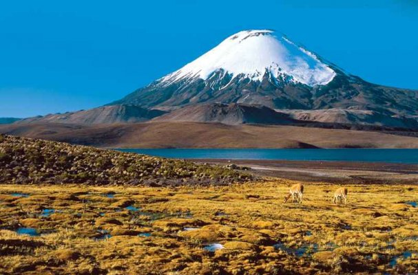

Con una superficie de 137883 hectáreas, el Parque Nacional Lauca es parte de la Red Mundial de Reservas de la Biosfera, y posee variados atractivos dentro de su fauna, topografía y vegetación, localizados principalmente en la precordillera desde los 3200 a los 3800 metros sobre el nivel del mar. La fauna es característica y se compone además de una gran cantidad de aves que suman más de cien especies distintas. Destacan la alpaca, la llama, el guanaco, la vicuña, el puma, la taruca, la vizcacha, el zorro, el blanquillo, el ñandú, la perdiz de puna, el huairavo, la guallata, el flamenco chileno, la tagua gigante, el pato juarjal, el pato jergón, el pato puna y el cóndor. En el Parque Nacional Lauca, también es posible deleitarse con las alturas volcánicas que superan los 6 mil metros por sobre el nivel del mar, dentro de las cuales destacan los volcanes Parinacota, Pomerape, Guallatire y Acotango, además de los campos de lava y de las calderas de Ajota y Tejene.